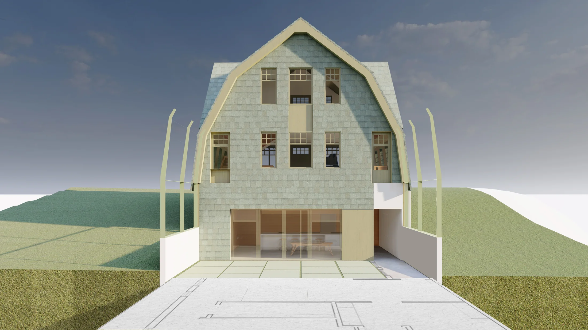
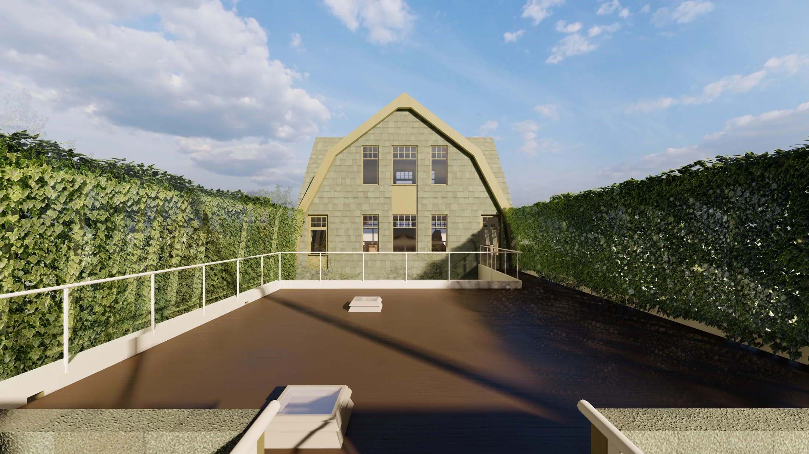
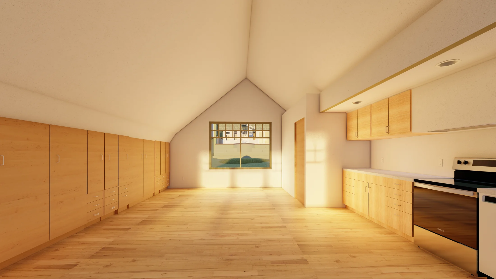
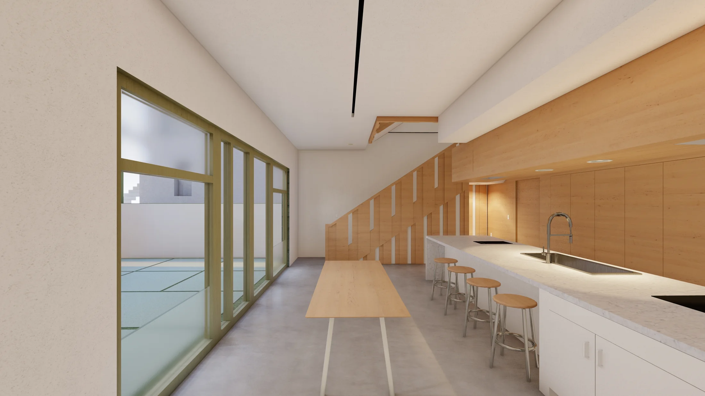
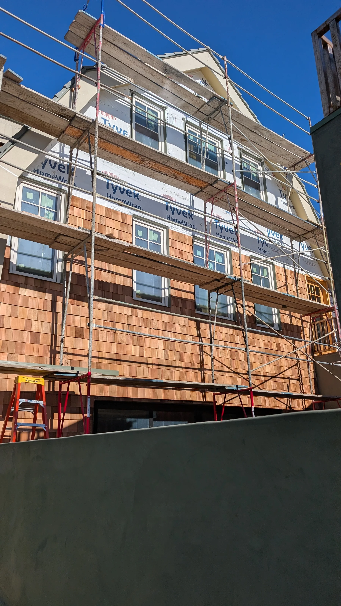
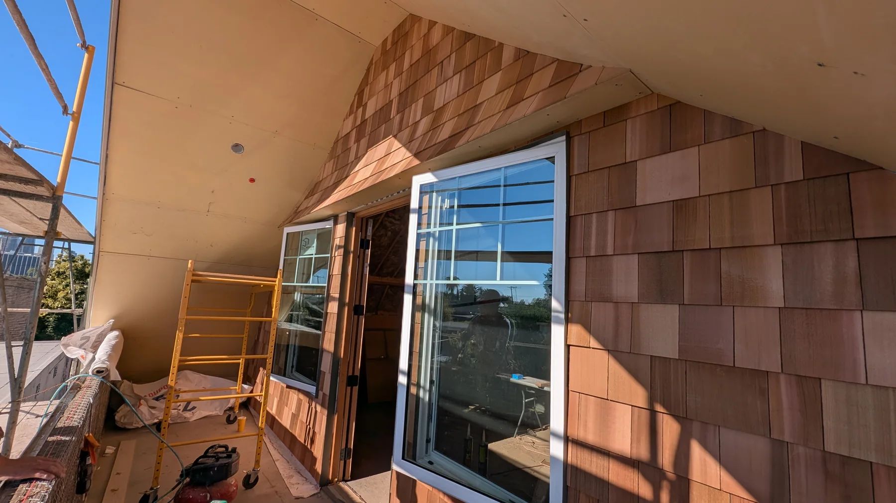
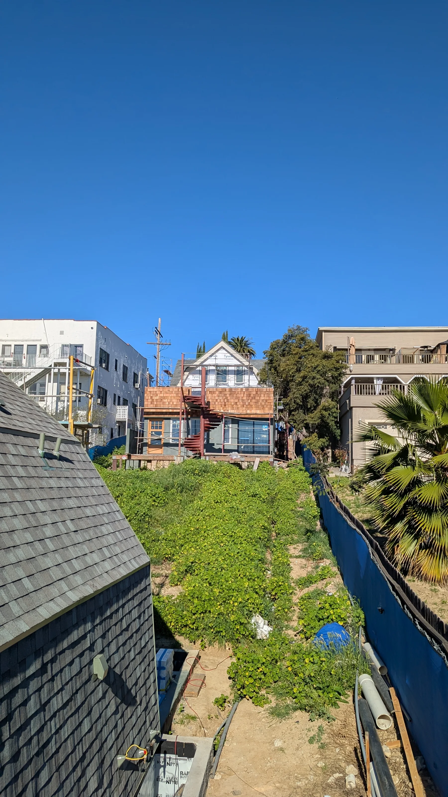
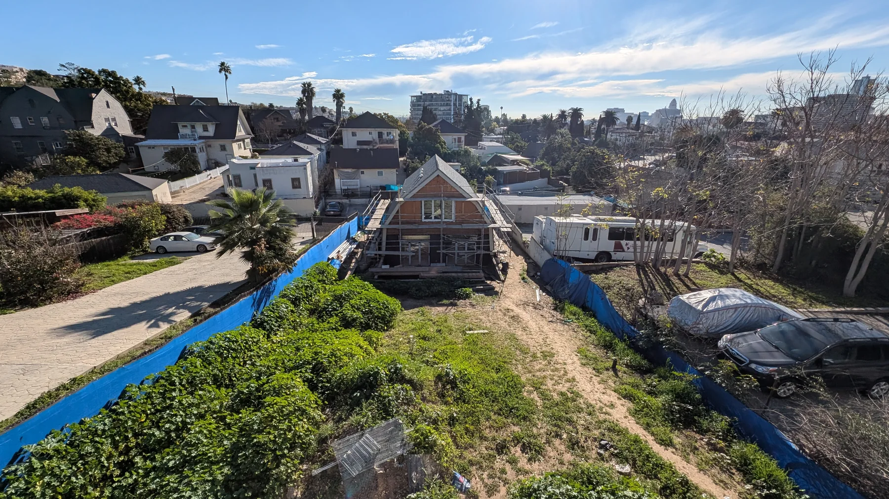

800 Edgeware House
A new Craftsman residence on the last undeveloped lot in Angelino Heights, designed within a strict historic neighborhood context and carried through documentation, permitting and construction administration.

Historic infill as a full project process
Working in a small office means the project is not divided into isolated design phases. My involvement moves between design, drawings, permitting, consultant coordination, bidding and construction administration.
The house is conceived as a contemporary project that must read coherently within the Craftsman character of Angelino Heights. The work therefore depends as much on proportions, roof geometry, detailing and material discipline as it does on plan organization.




From drawing to field condition
The portfolio is intentionally pairing design images with construction photographs. For this project, construction administration is part of the design work: responding to RFIs and submittals, coordinating changes and resolving field conditions while maintaining the architectural intent.



